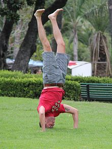
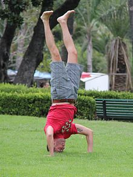

arms at 90deg


source: Yoga Journal
standing wide legs, torso bent over, parallel feet


source: Yoga Journal
tripod head stand, legs extended straight up, arms at 90deg

source
tripod head stand, legs bent, arms straight
| Current pose: tripod head stand, legs bent, arms at 90deg | Adjacent poses: squat, knees wide OR garland | crane | standing wide legs, torso bent over, parallel feet | tripod head stand, legs extended straight up, arms at 90deg | tripod head stand, legs bent, arms straight | |
|
left-right symmetric arms at 90deg |
source: Yoga Journal
standing wide legs, torso bent over, parallel feet source: Yoga Journal
tripod head stand, legs extended straight up, arms at 90deg 
tripod head stand, legs bent, arms straight |